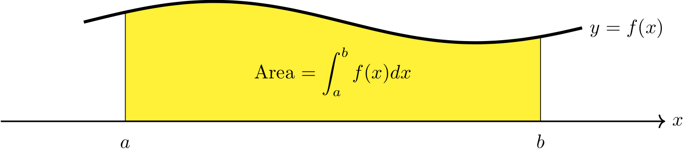
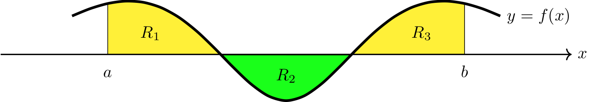

Riemann Sums and the Definite Integral¶
Area Under a Curve and Riemann Sums¶
Consider trying to compute the area of a region (below left) between the graph of \(y=f(x)\) and the \(x\)-axis on the interval \([a,b]\).
A Riemann sum uses rectangles (above right) to approximate the desired area in the following manner. Start by selecting a value for \(n\), which is the number of rectangles. Then break up the interval \([a,b]\) into \(n\) subintervals, each having width \(\Delta x = (b-a)/n\). Each subinterval corresponds to the base of a rectangle where \(\Delta x\) is the width of the rectangle. Next, pick one value, \(x_i\), from each subinterval, and evaluate \(f(x_i)\) to determine the height of the corresponding rectangle.
The total area of the \(n\) rectangles is given by
which is called a {\it Riemann Sum}. It approximates the area of the region between the graph of \(y=f(x)\) and the \(x\)-axis on the interval \([a,b]\).
Here are several different ways to select the values \(x_1,\ldots,x_n\).
Right Riemann Sum: \(x_1,\ldots, x_n\) are the right endpoints of the \(n\) subintervals.
Left Riemann Sum: \(x_1,\ldots, x_n\) are the left endpoints of the \(n\) subintervals.
Midpoint Rule: \(x_1,\ldots, x_n\) are the midpoints of the \(n\) subintervals.
In general, a Riemann sum approximates the value of a definite integral (see below).
The Limit Definition of a Definite Integral¶
Definition
Suppose \(f\) is a continuous function on \([a,b]\). The definite integral of \(f\) from \(a\) to \(b\), denoted by \(\int_a^b f(x) ~dx\), is defined as
where the values of \(x_1,x_2,\ldots, x_n\) are chosen from the \(n\) subintervals of \([a,b]\) of equal width \(\Delta x = \dfrac{b-a}{n}\).
The values \(a\) and \(b\) are referred to as limits of integration.
Geometric Interpretation of the Definite Integral¶
If \(f(x)\geq 0\) is continuous on \([a,b]\), then \(\int_a^b f(x) ~dx\) is equal to the area of the region between the graph of \(f\) and the \(x\)-axis on \([a,b]\).
{kind=link}
In general, \(\int_a^b f(x) ~dx\) can be interpreted as the area of the regions that are below the graph of \(f\) and above the \(x\)-axis minus the area of the regions that are below the \(x\)-axis and above the graph of \(f\).
{kind=link}
Properties of the Definite Integral¶
Properties of the Definite Integral
If \(f\) and \(g\) are continuous on \([a,b]\) and \(c\) is a constant, then
\(\displaystyle \int_a^a f(x) ~dx = 0\)
\(\displaystyle \int_a^b f(x) ~dx = -\int_b^af(x) ~dx\)
\(\displaystyle \int_a^b cf(x) ~dx = c\int_a^b f(x) ~dx\)
\(\displaystyle \int_a^b f(x) \pm g(x) ~dx = \int_a^b f(x) ~dx \pm \int_a^b g(x) ~dx\)
\(\displaystyle \int_a^b f(x) ~dx = \int_a^c f(x) ~dx + \int_c^b f(x) ~dx\)
Example 1¶
Computing Riemann sums
Use a right Riemann sum, left Riemann sum, and midpoint rule to approximate the area under the graph of \(y=x^2\) on \([1,3]\) using 4 subintervals.
Step 1: Find the length of each interval, \(\Delta x\), and break up \([1,3]\) into 4 subintervals of length \(\Delta x\).
The endpoints of the subintervals are labeled below the number line while the midpoints of each subinterval are labeled above the number line. Each midpoint is calculated by computing the average of the two endpoints of the corresponding subinterval.

Step 2: Use a right Riemann sum to approximate the area.
{kind=link}
Therefore, the area under the graph of \(y=x^2\) on \([1,3]\) is approximately \(43/4 = 10.75\).
Step 3: Use a left Riemann sum to approximate the area.
{kind=link}
Therefore, the area under the graph of \(y=x^2\) on \([1,3]\) is approximately \(27/4 = 6.75\).
Step 4: Use the midpoint rule to approximate the area.
{kind=link}
Therefore, the area under the graph of \(y=x^2\) on \([1,3]\) is approximately \(69/8 = 8.625\).